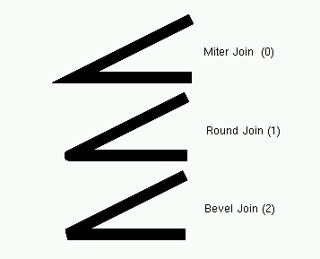

class TPostScript: public TVirtualPS
TPostScript: Graphics interface to PostScript
To generate a Postscript (or encapsulated ps) file corresponding to a single image in a canvas, you can:
- Select the Print PostScript item in the canvas File menu.
By default, a Postscript file with the name of the canvas.ps is generated.
- Click in the canvas area, near the edges, with the right mouse button
and select the Print item. You can select the name of the Postscript
file. If the file name is xxx.ps, you will generate a Postscript file named
xxx.ps. If the file name is xxx.eps, you generate an encapsulated Postscript
file instead.
- In your program (or macro), you can type:
c1->Print("xxx.ps") or c1->Print("xxx.eps")
This will generate a file corresponding to the picture in the canvas pointed by c1.
pad1->Print("xxx.ps")
prints only the picture in the pad pointed by pad1. The size of the Postscript picture, by default, is computed to keep the aspect ratio of the picture on the screen, where the size along x is always 20cm. You can set the size of the PostScript picture before generating the picture with a command such as:
TPostScript myps("myfile.ps",111) myps.Range(xsize,ysize); object->Draw(); myps.Close();You can set the default paper size with:
gStyle->SetPaperSize(xsize,ysize);
You can resume writing again in this file with myps.Open();. Note that you may have several Postscript files opened simultaneously.
Output type
The output type allows to define how the PostScript output will looks like. It allows to define the page format (A4, Legal etc..), the orientation (Portrait, Landscape) and the number of images (zones) per page. The output type has the following form:
[Format][Nx][Ny][Type]
Where:
- Format : Is an integer between 0 and 99 defining the page format.
Example:
Format = 3 the paper is in the standard A3 format.
Format = n (1
The A0 format is selected by Format=99.
The US format Letter is selected by Format = 100.
The US format Legal is selected by Format = 200.
The US format Ledger is selected by Format = 300.- Nx, Ny : Specify respectively the number of zones on the x and y axis. Nx and Ny are integers between 1 and 9.
- Type : Can be equal to:
- 1 : Portrait mode with a small margin at the bottom of the page.
- 2 : Landscape mode with a small margin at the bottom of the page.
- 4 : Portrait mode with a large margin at the bottom of the page.
- 5 : Landscape mode with a large margin at the bottom of the page. The large margin is useful for some PostScript printers (very often for the colour printers) as they need more space to grip the paper for mechanical reasons. Note that some PostScript colour printers can also use the so called special A4 format permitting the full usage of the A4 area; in this case larger margins are not necessary and Type=1 or 2 can be used.
- 3 : Encapsulated PostScript. This Type permits the generation of files which can be included in other documents, for example in LaTeX files.
Making several pictures in the same Postscript file: case 1
The following macro is an example illustrating how to open a Postscript file and draw several pictures. The generation of a new Postscript page is automatic when TCanvas::Clear is called by object->Draw().
{
TFile f("hsimple.root");
TCanvas c1("c1","canvas",800,600);
// select postscript output type
// type = 111 portrait ps
// type = 112 landscape ps
// type = 113 eps
Int_t type = 111;
// create a postscript file and set the paper size
TPostScript ps("test.ps",type);
ps.Range(16,24); //set x,y of printed page
// draw 3 histograms from file hsimple.root on separate pages
hpx->Draw();
c1.Update(); //force drawing in a macro
hprof->Draw();
c1.Update();
hpx->Draw("lego1");
c1.Update();
ps.Close();
}
Making several pictures in the same Postscript file: case 2
This example shows 2 pages. The canvas is divided. TPostScript::NewPage must be called before starting a new picture.object->Draw does not clear the canvas in this case because we clear only the pads and not the main canvas. Note that c1->Update must be called at the end of the first picture.
{
TFile *f1 = new TFile("hsimple.root");
TCanvas *c1 = new TCanvas("c1");
TPostScript *ps = new TPostScript("file.ps",112);
c1->Divide(2,1);
// picture 1
ps->NewPage();
c1->cd(1);
hpx->Draw();
c1->cd(2);
hprof->Draw();
c1->Update();
// picture 2
ps->NewPage();
c1->cd(1);
hpxpy->Draw();
c1->cd(2);
ntuple->Draw("px");
c1->Update();
ps->Close();
// invoke Postscript viewer
gSystem->Exec("gs file.ps");
}
Making several pictures in the same Postscript file: case 3
This is the recommended way. If the Postscript file name finishes with "(", the file remains opened (it is not closed). If the Postscript file name finishes with ")" and the file has been opened with "(", the file is closed.Example:
{
TCanvas c1("c1");
h1.Draw();
c1.Print("c1.ps("); // write canvas and keep the ps file open
h2.Draw();
c1.Print("c1.ps"); // canvas is added to "c1.ps"
h3.Draw();
c1.Print("c1.ps)"); // canvas is added to "c1.ps" and ps file is closed
}
The TCanvas::Print("file.ps(") mechanism is very useful, but it can
be a little inconvenient to have the action of opening/closing a file being
atomic with printing a page. Particularly if pages are being generated in some
loop one needs to detect the special cases of first and last page and then
munge the argument to Print() accordingly.
The "[" and "]" can be used instead of "(" and ")" as shown below.
Example:
c1.Print("file.ps["); // No actual print, just open file.ps
for (int i=0; i<10; ++i) {
// fill canvas for context i
// ...
c1.Print("file.ps"); // Actually print canvas to the file
}
c1.Print("file.ps]"); // No actual print, just close the file
Color Model
TPostScript support two color model RGB and CMYK. CMY and CMYK models are subtractive color models unlike RGB which is an additive. They are mainly used for printing purposes. CMY means Cyan Magenta Yellow to convert RGB to CMY it is enough to do: C=1-R, M=1-G and Y=1-B. CMYK has one more component K (black). The conversion from RGB to CMYK is:Double_t Black = TMath::Min(TMath::Min(1-Red,1-Green),1-Blue); Double_t Cyan = (1-Red-Black)/(1-Black); Double_t Magenta = (1-Green-Black)/(1-Black); Double_t Yellow = (1-Blue-Black)/(1-Black);CMYK add the black component which allows to have a better quality for black printing. PostScript support the CMYK model.
To change the color model use gStyle->SetColorModelPS(c).
- c = 0 means TPostScript will use RGB color model (default)
- c = 1 means TPostScript will use CMYK color model
Function Members (Methods)
| TPostScript() | |
| TPostScript(const char* filename, Int_t type = -111) | |
| virtual | ~TPostScript() |
| void | TObject::AbstractMethod(const char* method) const |
| virtual void | TObject::AppendPad(Option_t* option = "") |
| virtual void | TObject::Browse(TBrowser* b) |
| virtual void | CellArrayBegin(Int_t W, Int_t H, Double_t x1, Double_t x2, Double_t y1, Double_t y2) |
| virtual void | CellArrayEnd() |
| virtual void | CellArrayFill(Int_t r, Int_t g, Int_t b) |
| static TClass* | Class() |
| virtual const char* | TObject::ClassName() const |
| virtual void | TNamed::Clear(Option_t* option = "") |
| virtual TObject* | TNamed::Clone(const char* newname = "") const |
| virtual void | Close(Option_t* opt = "") |
| Int_t | CMtoPS(Double_t u) |
| virtual Int_t | TNamed::Compare(const TObject* obj) const |
| virtual void | TNamed::Copy(TObject& named) const |
| void | DefineMarkers() |
| virtual void | TObject::Delete(Option_t* option = "")MENU |
| Int_t | TAttLine::DistancetoLine(Int_t px, Int_t py, Double_t xp1, Double_t yp1, Double_t xp2, Double_t yp2) |
| virtual Int_t | TObject::DistancetoPrimitive(Int_t px, Int_t py) |
| virtual void | TObject::Draw(Option_t* option = "") |
| virtual void | DrawBox(Double_t x1, Double_t y1, Double_t x2, Double_t y2) |
| virtual void | TObject::DrawClass() constMENU |
| virtual TObject* | TObject::DrawClone(Option_t* option = "") constMENU |
| virtual void | DrawFrame(Double_t xl, Double_t yl, Double_t xt, Double_t yt, Int_t mode, Int_t border, Int_t dark, Int_t light) |
| void | DrawHatch(Float_t dy, Float_t angle, Int_t n, Float_t* x, Float_t* y) |
| void | DrawHatch(Float_t dy, Float_t angle, Int_t n, Double_t* x, Double_t* y) |
| void | DrawPolyLine(Int_t n, TPoints* xy) |
| void | DrawPolyLineNDC(Int_t n, TPoints* uv) |
| virtual void | DrawPolyMarker(Int_t n, Float_t* x, Float_t* y) |
| virtual void | DrawPolyMarker(Int_t n, Double_t* x, Double_t* y) |
| virtual void | DrawPS(Int_t n, Float_t* xw, Float_t* yw) |
| virtual void | DrawPS(Int_t n, Double_t* xw, Double_t* yw) |
| virtual void | TObject::Dump() constMENU |
| virtual void | TObject::Error(const char* method, const char* msgfmt) const |
| virtual void | TObject::Execute(const char* method, const char* params, Int_t* error = 0) |
| virtual void | TObject::Execute(TMethod* method, TObjArray* params, Int_t* error = 0) |
| virtual void | TObject::ExecuteEvent(Int_t event, Int_t px, Int_t py) |
| virtual void | TObject::Fatal(const char* method, const char* msgfmt) const |
| virtual void | TNamed::FillBuffer(char*& buffer) |
| virtual TObject* | TObject::FindObject(const char* name) const |
| virtual TObject* | TObject::FindObject(const TObject* obj) const |
| void | FontEncode() |
| virtual Option_t* | TObject::GetDrawOption() const |
| static Long_t | TObject::GetDtorOnly() |
| virtual Color_t | TAttFill::GetFillColor() const |
| virtual Style_t | TAttFill::GetFillStyle() const |
| virtual const char* | TObject::GetIconName() const |
| virtual Color_t | TAttLine::GetLineColor() const |
| virtual Style_t | TAttLine::GetLineStyle() const |
| virtual Width_t | TAttLine::GetLineWidth() const |
| virtual Color_t | TAttMarker::GetMarkerColor() const |
| virtual Size_t | TAttMarker::GetMarkerSize() const |
| virtual Style_t | TAttMarker::GetMarkerStyle() const |
| virtual const char* | TNamed::GetName() const |
| virtual char* | TObject::GetObjectInfo(Int_t px, Int_t py) const |
| static Bool_t | TObject::GetObjectStat() |
| virtual Option_t* | TObject::GetOption() const |
| virtual void* | TVirtualPS::GetStream() const |
| virtual Short_t | TAttText::GetTextAlign() const |
| virtual Float_t | TAttText::GetTextAngle() const |
| virtual Color_t | TAttText::GetTextColor() const |
| virtual Font_t | TAttText::GetTextFont() const |
| virtual Float_t | TAttText::GetTextSize() const |
| virtual const char* | TNamed::GetTitle() const |
| virtual Int_t | TVirtualPS::GetType() const |
| virtual UInt_t | TObject::GetUniqueID() const |
| virtual Bool_t | TObject::HandleTimer(TTimer* timer) |
| virtual ULong_t | TNamed::Hash() const |
| virtual void | TObject::Info(const char* method, const char* msgfmt) const |
| virtual Bool_t | TObject::InheritsFrom(const char* classname) const |
| virtual Bool_t | TObject::InheritsFrom(const TClass* cl) const |
| void | Initialize() |
| virtual void | TObject::Inspect() constMENU |
| void | TObject::InvertBit(UInt_t f) |
| virtual TClass* | IsA() const |
| virtual Bool_t | TObject::IsEqual(const TObject* obj) const |
| virtual Bool_t | TObject::IsFolder() const |
| Bool_t | TObject::IsOnHeap() const |
| virtual Bool_t | TNamed::IsSortable() const |
| virtual Bool_t | TAttFill::IsTransparent() const |
| Bool_t | TObject::IsZombie() const |
| virtual void | TNamed::ls(Option_t* option = "") const |
| void | TObject::MayNotUse(const char* method) const |
| virtual void | TAttLine::Modify() |
| void | MovePS(Int_t x, Int_t y) |
| virtual void | NewPage() |
| virtual Bool_t | TObject::Notify() |
| void | TObject::Obsolete(const char* method, const char* asOfVers, const char* removedFromVers) const |
| void | Off() |
| void | On() |
| virtual void | Open(const char* filename, Int_t type = -111) |
| static void | TObject::operator delete(void* ptr) |
| static void | TObject::operator delete(void* ptr, void* vp) |
| static void | TObject::operator delete[](void* ptr) |
| static void | TObject::operator delete[](void* ptr, void* vp) |
| void* | TObject::operator new(size_t sz) |
| void* | TObject::operator new(size_t sz, void* vp) |
| void* | TObject::operator new[](size_t sz) |
| void* | TObject::operator new[](size_t sz, void* vp) |
| TNamed& | TNamed::operator=(const TNamed& rhs) |
| virtual void | TObject::Paint(Option_t* option = "") |
| virtual void | TObject::Pop() |
| virtual void | TNamed::Print(Option_t* option = "") const |
| virtual void | TVirtualPS::PrintFast(Int_t nch, const char* string = "") |
| virtual void | TVirtualPS::PrintStr(const char* string = "") |
| void | Range(Float_t xrange, Float_t yrange) |
| virtual Int_t | TObject::Read(const char* name) |
| virtual void | TObject::RecursiveRemove(TObject* obj) |
| virtual void | TAttFill::ResetAttFill(Option_t* option = "") |
| virtual void | TAttLine::ResetAttLine(Option_t* option = "") |
| virtual void | TAttMarker::ResetAttMarker(Option_t* toption = "") |
| virtual void | TAttText::ResetAttText(Option_t* toption = "") |
| void | TObject::ResetBit(UInt_t f) |
| virtual void | TObject::SaveAs(const char* filename = "", Option_t* option = "") constMENU |
| virtual void | TAttFill::SaveFillAttributes(ostream& out, const char* name, Int_t coldef = 1, Int_t stydef = 1001) |
| virtual void | TAttLine::SaveLineAttributes(ostream& out, const char* name, Int_t coldef = 1, Int_t stydef = 1, Int_t widdef = 1) |
| virtual void | TAttMarker::SaveMarkerAttributes(ostream& out, const char* name, Int_t coldef = 1, Int_t stydef = 1, Int_t sizdef = 1) |
| virtual void | TObject::SavePrimitive(ostream& out, Option_t* option = "") |
| void | SaveRestore(Int_t flag) |
| virtual void | TAttText::SaveTextAttributes(ostream& out, const char* name, Int_t alidef = 12, Float_t angdef = 0, Int_t coldef = 1, Int_t fondef = 61, Float_t sizdef = 1) |
| void | TObject::SetBit(UInt_t f) |
| void | TObject::SetBit(UInt_t f, Bool_t set) |
| void | SetColor(Int_t color = 1) |
| virtual void | SetColor(Float_t r, Float_t g, Float_t b) |
| virtual void | TObject::SetDrawOption(Option_t* option = "")MENU |
| static void | TObject::SetDtorOnly(void* obj) |
| virtual void | TAttFill::SetFillAttributes()MENU |
| virtual void | SetFillColor(Color_t cindex = 1) |
| void | SetFillPatterns(Int_t ipat, Int_t color) |
| virtual void | TAttFill::SetFillStyle(Style_t fstyle) |
| virtual void | TAttLine::SetLineAttributes()MENU |
| virtual void | SetLineColor(Color_t cindex = 1) |
| void | SetLineJoin(Int_t linejoin = 0) |
| void | SetLineScale(Float_t scale = 3) |
| virtual void | SetLineStyle(Style_t linestyle = 1) |
| virtual void | SetLineWidth(Width_t linewidth = 1) |
| virtual void | TAttMarker::SetMarkerAttributes()MENU |
| virtual void | SetMarkerColor(Color_t cindex = 1) |
| virtual void | TAttMarker::SetMarkerSize(Size_t msize = 1) |
| virtual void | TAttMarker::SetMarkerStyle(Style_t mstyle = 1) |
| virtual void | TNamed::SetName(const char* name)MENU |
| virtual void | TNamed::SetNameTitle(const char* name, const char* title) |
| static void | TObject::SetObjectStat(Bool_t stat) |
| virtual void | TVirtualPS::SetStream(ofstream* os) |
| virtual void | TAttText::SetTextAlign(Short_t align = 11) |
| virtual void | TAttText::SetTextAngle(Float_t tangle = 0)MENU |
| virtual void | TAttText::SetTextAttributes()MENU |
| virtual void | SetTextColor(Color_t cindex = 1) |
| virtual void | TAttText::SetTextFont(Font_t tfont = 62) |
| virtual void | TAttText::SetTextSize(Float_t tsize = 1) |
| virtual void | TAttText::SetTextSizePixels(Int_t npixels) |
| virtual void | TNamed::SetTitle(const char* title = "")MENU |
| virtual void | TVirtualPS::SetType(Int_t = -111) |
| virtual void | TObject::SetUniqueID(UInt_t uid) |
| virtual void | ShowMembers(TMemberInspector& insp) |
| virtual Int_t | TNamed::Sizeof() const |
| virtual void | Streamer(TBuffer& b) |
| void | StreamerNVirtual(TBuffer& b) |
| virtual void | TObject::SysError(const char* method, const char* msgfmt) const |
| Bool_t | TObject::TestBit(UInt_t f) const |
| Int_t | TObject::TestBits(UInt_t f) const |
| virtual void | Text(Double_t x, Double_t y, const char* string) |
| void | TextNDC(Double_t u, Double_t v, const char* string) |
| virtual void | TObject::UseCurrentStyle() |
| Int_t | UtoPS(Double_t u) |
| Int_t | VtoPS(Double_t v) |
| virtual void | TObject::Warning(const char* method, const char* msgfmt) const |
| virtual Int_t | TObject::Write(const char* name = 0, Int_t option = 0, Int_t bufsize = 0) |
| virtual Int_t | TObject::Write(const char* name = 0, Int_t option = 0, Int_t bufsize = 0) const |
| virtual void | TVirtualPS::WriteInteger(Int_t i, Bool_t space = kTRUE) |
| virtual void | TVirtualPS::WriteReal(Float_t r) |
| Int_t | XtoPS(Double_t x) |
| Int_t | YtoPS(Double_t y) |
| void | Zone() |
| virtual void | TObject::DoError(int level, const char* location, const char* fmt, va_list va) const |
| void | TObject::MakeZombie() |
Data Members
| enum TObject::EStatusBits { | kCanDelete | |
| kMustCleanup | ||
| kObjInCanvas | ||
| kIsReferenced | ||
| kHasUUID | ||
| kCannotPick | ||
| kNoContextMenu | ||
| kInvalidObject | ||
| }; | ||
| enum TObject::[unnamed] { | kIsOnHeap | |
| kNotDeleted | ||
| kZombie | ||
| kBitMask | ||
| kSingleKey | ||
| kOverwrite | ||
| kWriteDelete | ||
| }; |
| Float_t | fBlue | Per cent of blue |
| Bool_t | fBoundingBox | True for Encapsulated PostScript |
| char* | TVirtualPS::fBuffer | File buffer |
| Bool_t | fClear | True when page must be cleared |
| Int_t | fClip | Clipping mode |
| Bool_t | fClipStatus | Clipping Indicator |
| Int_t | fCurrentColor | current Postscript color index |
| Float_t | fDXC | |
| Float_t | fDYC | |
| Float_t | fFX | |
| Float_t | fFY | |
| Color_t | TAttFill::fFillColor | fill area color |
| Style_t | TAttFill::fFillStyle | fill area style |
| Float_t | fGreen | Per cent of green |
| Int_t | fIXzone | Current zone along X |
| Int_t | fIYzone | Current zone along Y |
| const char* | TVirtualPS::fImplicitCREsc | Escape symbol before enforced new line |
| Int_t | fLastCellBlue | Last blue value |
| Int_t | fLastCellGreen | Last green value |
| Int_t | fLastCellRed | Last red value |
| Int_t | TVirtualPS::fLenBuffer | Buffer length |
| Color_t | TAttLine::fLineColor | line color |
| Int_t | fLineJoin | Appearance of joining lines |
| Float_t | fLineScale | Line width scale factor |
| Style_t | TAttLine::fLineStyle | line style |
| Width_t | TAttLine::fLineWidth | line width |
| Color_t | TAttMarker::fMarkerColor | Marker color index |
| Size_t | TAttMarker::fMarkerSize | Marker size |
| Float_t | fMarkerSizeCur | current transformed value of marker size |
| Style_t | TAttMarker::fMarkerStyle | Marker style |
| Int_t | fMaxLines | Maximum number of lines in a PS array |
| Float_t | fMaxsize | Largest dimension of X and Y |
| Int_t | fMode | PostScript mode |
| Int_t | fNBSameColorCell | Number of boxes with the same color |
| Int_t | TVirtualPS::fNByte | Number of bytes written in the file (PDF) |
| Int_t | fNXzone | Number of zones along X |
| Int_t | fNYzone | Number of zones along Y |
| TString | TNamed::fName | object identifier |
| Int_t | fNbCellLine | Number of boxes in the current line |
| Int_t | fNbCellW | Number of boxes per line |
| Int_t | fNbinCT | Number of entries in the current Cell Array |
| Int_t | fNpages | number of pages |
| char | fPatterns[32] | Indicate if pattern n is defined |
| Bool_t | TVirtualPS::fPrinted | True when a page must be printed |
| Bool_t | fRange | True when a range has been defined |
| Float_t | fRed | Per cent of red |
| Int_t | fSave | Number of gsave for restore |
| Int_t | TVirtualPS::fSizBuffer | Buffer size |
| ofstream* | TVirtualPS::fStream | File stream identifier |
| Short_t | TAttText::fTextAlign | Text alignment |
| Float_t | TAttText::fTextAngle | Text angle |
| Color_t | TAttText::fTextColor | Text color index |
| Font_t | TAttText::fTextFont | Text font number |
| Float_t | TAttText::fTextSize | Text size |
| TString | TNamed::fTitle | object title |
| Int_t | fType | PostScript workstation type |
| Float_t | fX1v | X bottom left corner of paper |
| Float_t | fX1w | |
| Float_t | fX2v | X top right corner of paper |
| Float_t | fX2w | |
| Float_t | fXC | |
| Float_t | fXVP1 | |
| Float_t | fXVP2 | |
| Float_t | fXVS1 | |
| Float_t | fXVS2 | |
| Float_t | fXsize | Page size along X |
| Float_t | fY1v | Y bottom left corner of paper |
| Float_t | fY1w | |
| Float_t | fY2v | Y top right corner of paper |
| Float_t | fY2w | |
| Float_t | fYC | |
| Float_t | fYVP1 | |
| Float_t | fYVP2 | |
| Float_t | fYVS1 | |
| Float_t | fYVS2 | |
| Float_t | fYsize | Page size along Y |
| Bool_t | fZone | Zone indicator |
| static Int_t | fgLineJoin | Appearance of joining lines |
Class Charts
{kind=link}
{kind=link}
{kind=link}
{kind=link}
Function documentation
Initialize the PostScript interface fname : PostScript file name wtype : PostScript workstation type The possible workstation types are: 111 ps Portrait 112 ps Landscape 113 eps
Draw a Cell Array Drawing a PostScript Cell Array is in fact done thanks to three procedures: CellArrayBegin, CellArrayFill, and CellArrayEnd. CellArrayBegin: Initiate the Cell Array by writing the necessary PostScript procedures and the initial values of the required parameters. The input parameters are: W: number of boxes along the width. H: number of boxes along the height x1,x2,y1,y2: First box coordinates. CellArrayFill: Is called for each box of the Cell Array. The first box is the top left one and the last box is the bottom right one. The input parameters are the Red, Green, and Blue components of the box colour. These Levels are between 0 and 255. CellArrayEnd: Finishes the Cell Array. PostScript cannot handle arrays larger than 65535. So the Cell Array is drawn in several pieces.
Draw a Frame around a box mode = -1 box looks as it is behind the screen mode = 1 box looks as it is in front of the screen border is the border size in already precomputed PostScript units dark is the color for the dark part of the frame light is the color for the light part of the frame
Draw Fill area with hatch styles
Draw Fill area with hatch styles
PostScript Initialisation This routine initialize the following PostScript procedures: +------------+------------------+-----------------------------------+ | Macro Name | Input parameters | Explanation | +------------+------------------+-----------------------------------+ | l | x y | Draw a line to the x y position | +------------+------------------+-----------------------------------+ | m | x y | Move to the position x y | +------------+------------------+-----------------------------------+ | box | dx dy x y | Define a box | +------------+------------------+-----------------------------------+ | bl | dx dy x y | Draw a line box | +------------+------------------+-----------------------------------+ | bf | dx dy x y | Draw a filled box | +------------+------------------+-----------------------------------+ | t | x y | Translate | +------------+------------------+-----------------------------------+ | r | angle | Rotate | +------------+------------------+-----------------------------------+ | rl | i j | Roll the stack | +------------+------------------+-----------------------------------+ | d | x y | Draw a relative line to x y | +------------+------------------+-----------------------------------+ | X | x | Draw a relative line to x (y=0) | +------------+------------------+-----------------------------------+ | Y | y | Draw a relative line to y (x=0) | +------------+------------------+-----------------------------------+ | rm | x y | Move relatively to x y | +------------+------------------+-----------------------------------+ | gr | | Restore the graphic context | +------------+------------------+-----------------------------------+ | lw | lwidth | Set line width to lwidth | +------------+------------------+-----------------------------------+ | sd | [] 0 | Set dash line define by [] | +------------+------------------+-----------------------------------+ | s | | Stroke mode | +------------+------------------+-----------------------------------+ | c | r g b | Set rgb color to r g b | +------------+------------------+-----------------------------------+ | cl | | Close path | +------------+------------------+-----------------------------------+ | f | | Fill the last describe path | +------------+------------------+-----------------------------------+ | mXX | x y | Draw the marker type XX at (x,y) | +------------+------------------+-----------------------------------+ | Zone | ix iy | Define the current zone | +------------+------------------+-----------------------------------+ | black | | The color is black | +------------+------------------+-----------------------------------+ | C | dx dy x y | Clipping on | +------------+------------------+-----------------------------------+ | NC | | Clipping off | +------------+------------------+-----------------------------------+ | R | | repeat | +------------+------------------+-----------------------------------+ | ita | | Used to make the symbols italic | +------------+------------------+-----------------------------------+ | K | | kshow | +------------+------------------+-----------------------------------+
Compute number of gsaves for restore This allows to write the correct number of grestore at the end of the PS file.
Patterns definition Define the pattern ipat in the current PS file. ipat can vary from 1 to 25. Together with the pattern, the color (color) in which the pattern has to be drawn is also required. A pattern is defined in the current PS file only the first time it is used. Some level 2 Postscript functions are used, so on level 1 printers, patterns will not work. This is not a big problem because patterns are defined only if they are used, so if they are not used a PS level 1 file will not be polluted by level 2 features, and in any case the old patterns used a lot of memory which made them almost unusable on old level 1 printers. Finally we should say that level 1 devices are becoming very rare. The official PostScript is now level 3 !
Set the value of the global parameter TPostScript::fgLineJoin. This parameter determines the appearance of joining lines in a PostScript output. It takes one argument which may be: - 0 (miter join) - 1 (round join) - 2 (bevel join) The default value is 0 (miter join)./*  */
To change the line join behaviour just do: TPostScript::SetLineJoin(2); // Set the PS line join to bevel.
Change the line style
linestyle = 2 dashed
= 3 dotted
= 4 dash-dotted
else = solid
See TStyle::SetLineStyleString for style definition
Write a string of characters This routine writes the string chars into a PostScript file at position xx,yy in world coordinates.